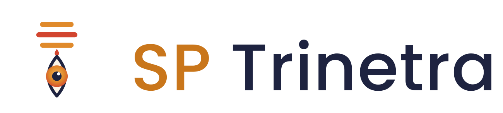
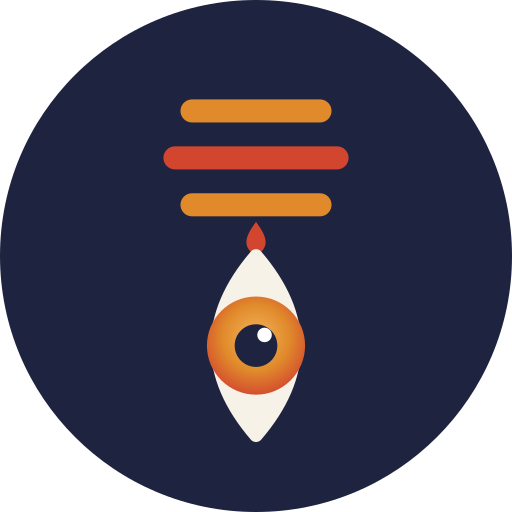
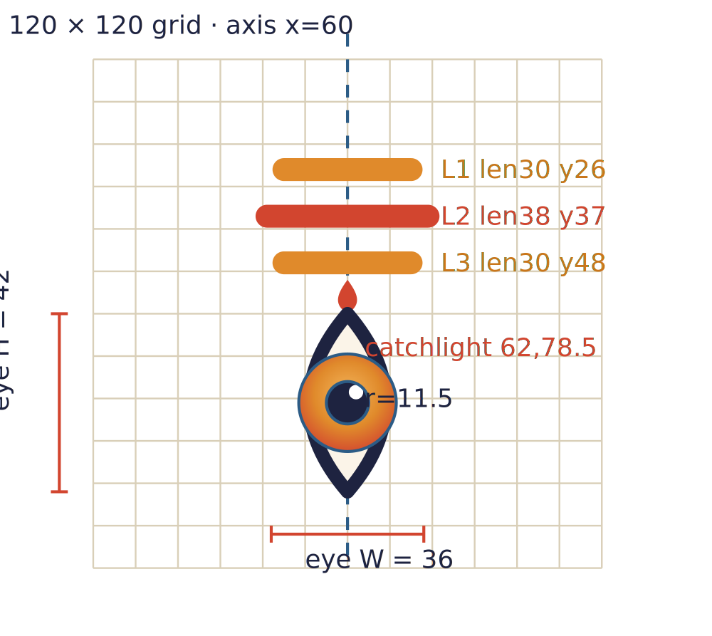

SP Trinetra
The third eye of clarity for business AI. This sheet defines the logo, colors, and exact construction so the mark stays consistent — and so any copy can be identified against the original geometry.
Logo versions

Full company lockup — formal use (invoices, contracts, letterhead, proposals).
Primary brand mark — website, marketing, everyday use.
Reversed — for dark backgrounds.
Icon / mark only — stamps, watermark, small spaces.

Avatar — email, WhatsApp, LinkedIn, social profiles.

App / favicon tile.
Colors
| Role | Name | HEX | RGB | CMYK |
|---|---|---|---|---|
| Text / structure | Neelkanth Indigo | #1E2340 | 30, 35, 64 | 53 45 0 75 |
| Primary / buttons | Kesari Saffron | #E08A2B | 224, 138, 43 | 0 38 81 12 |
| Primary (deep) | Saffron Deep | #C9761B | 201, 118, 27 | 0 41 87 21 |
| Accent / fire | Third-eye Vermilion | #D2452F | 210, 69, 47 | 0 67 78 18 |
| Live / link accent | Neelkanth Blue | #2C5C86 | 44, 92, 134 | 67 31 0 47 |
| Background | Sacred-ash Ivory | #F7F2E8 | 247, 242, 232 | 0 2 6 3 |
Typography
Poppins — logo wordmark & headings (Medium 500 / SemiBold 600 / Bold 700).
IBM Plex Sans — body text.
IBM Plex Mono — labels, code, data, eyebrows.
Clear space & minimum size
- Clear space: keep empty margin on all sides equal to the iris diameter (23 units in the 120-grid ≈ 19% of the mark's height). Nothing — text, edges, other logos — enters this zone.
- Minimum size: mark alone ≥ 24 px tall; full lockup ≥ 120 px wide. Below this the three ash-lines blur together.
- Backgrounds: use the standard logo on ivory/white/light; use the reversed (dark) version on indigo or photos.
Construction & fingerprint
The mark is built on a 120 × 120 grid, symmetrical about the vertical axis x = 60. These exact measurements are the proof of authorship — a copy will almost never match all of them.

TRIPUNDRA (3 ash lines) — stroke width 5.4, round caps, vertical spacing 11. L1 y=26 length 30 (saffron) · L2 y=37 length 38 (vermilion, the longest) · L3 y=48 length 30 (saffron).
FIRE DROP — small vermilion flame at x=60, y≈52–60, directly above the eye tip.
EYE — almond path: M60 60 Q78 81 60 102 Q42 81 60 60; height 42, width 36 at mid; indigo stroke 3.2, ivory fill.
IRIS — circle cx60 cy81 r=11.5; radial gradient #F4B65C → #E08A2B → #D2452F.
PUPIL — circle cx60 cy81 r=5, solid indigo.
CATCHLIGHT — the tell: white dot r=1.7 at (62, 78.5) — offset up-and-right of center, never centered.
PROPORTION — eye height (42) ≈ 1.9× the tripundra stack height (22).
Quick authenticity check: middle ash-line is the longest and the only red one; iris is a saffron-to-red gradient (not flat); catchlight sits up-right, not centered. Miss any of these → not the genuine mark.
Misuse — don't
- ✕ recolor the logo outside the palette, or make the whole mark one flat color
- ✕ stretch, rotate, or skew it; keep the 120×120 proportions
- ✕ center the catchlight or remove the gradient/fire-drop
- ✕ add effects (drop shadows, outlines, glows) to the mark itself
- ✕ place on a busy background with low contrast — use the dark/reversed version instead
File index
| File | Use for |
|---|---|
| logo-company.svg / .png | Formal "SP Trinetra" lockup — documents, contracts, letterhead |
| logo-full.svg / .png | Primary "trinetra" brand — website, decks, marketing |
| logo-full-dark.svg | Dark backgrounds |
| logo-mark.svg / .png | Icon only — watermark, stamp, tight spaces |
| avatar-round.png | Email / social / LinkedIn / WhatsApp avatar |
| favicon.svg / .png | Browser tab + app icon |
| email-signature.html | Email signature template (paste into Gmail/Outlook) |
SP Trinetra · sptrinetra.com · Brand guidelines v1